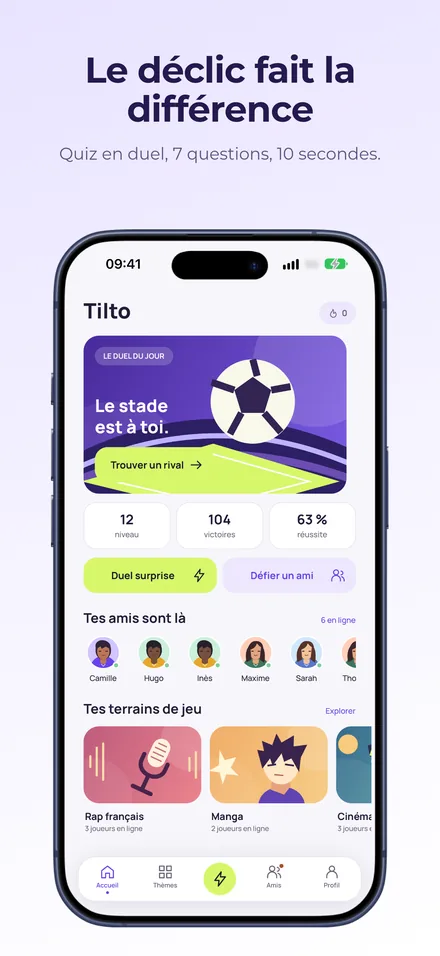
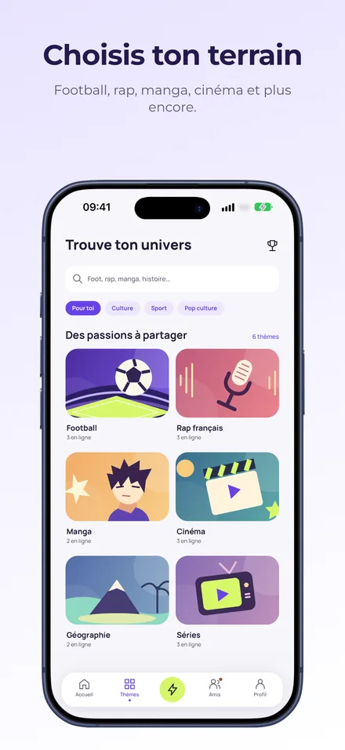
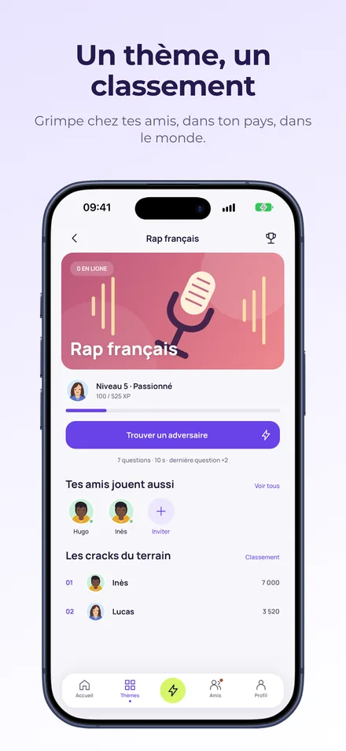
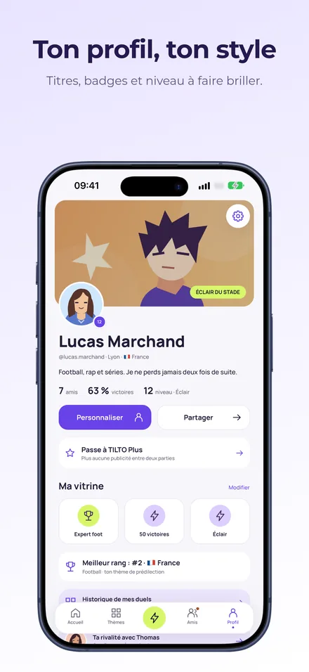
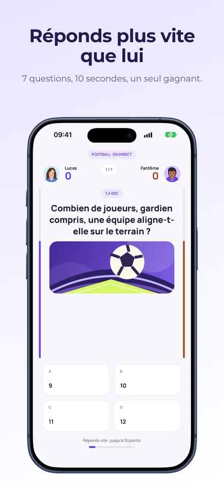
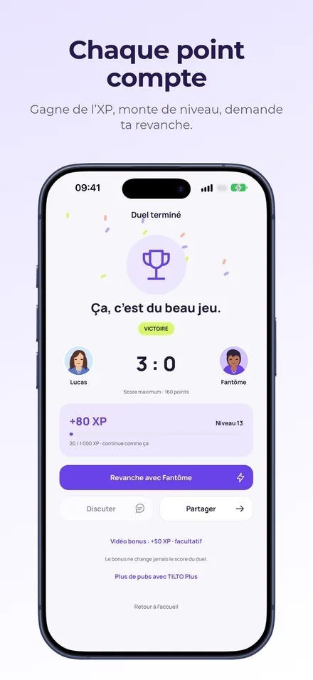
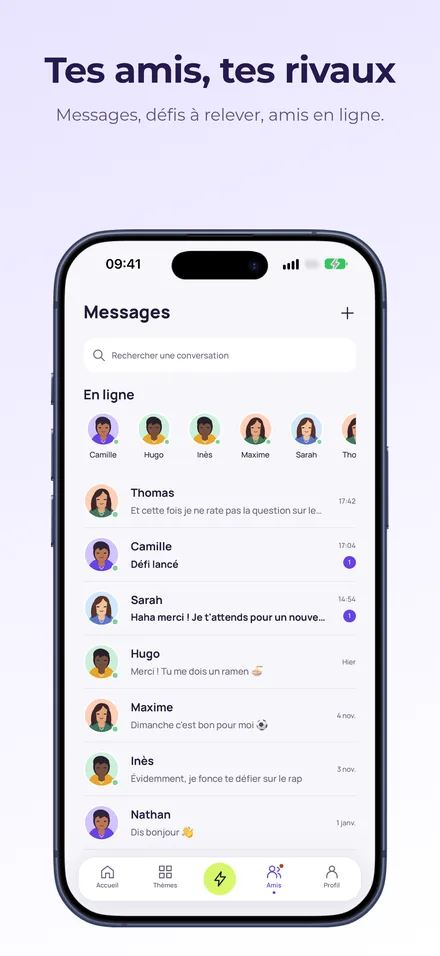
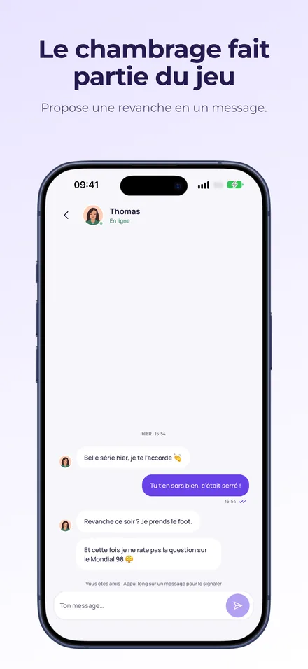

Choisis ton terrain de jeu
Réponds juste, joue avec le chrono et fais progresser ton profil. Retrouve tes amis, échange des messages et lance une revanche.
TILTO en images








TILTO Plus
Un abonnement facultatif pour retirer les publicités entre les parties et afficher un badge Plus sur ton profil. Les vidéos bonus restent facultatives. Les questions et les règles du duel restent les mêmes.
Les offres mensuelle et annuelle se renouvellent automatiquement. Le prix est affiché dans l’application avant l’achat. Tu peux gérer ou résilier ton abonnement dans les réglages de ton App Store ou de Google Play.
Besoin d’un coup de main ?
Pour une question, un problème de connexion, un achat ou un signalement, écris à labasquelucas@gmail.com. Indique ton pseudo, le modèle de ton appareil et ce qui s’est passé. Ne communique jamais ton mot de passe ni ton code de connexion.
Je ne reçois pas mon code
Vérifie l’adresse saisie et le dossier des courriers indésirables, puis demande un nouveau code depuis TILTO. Utilise le dernier code reçu.
Mon abonnement ne s’affiche pas
Vérifie que tu utilises le bon compte TILTO et le compte du store utilisé pour l’achat. Dans l’écran TILTO Plus, touche « Restaurer mes achats ». Si le problème continue, contacte l’assistance.
Comment résilier TILTO Plus ?
Gère ton abonnement dans les abonnements de ton compte Apple ou ceux de Google Play. Supprimer ton compte TILTO ne résilie pas automatiquement un abonnement.
Comment supprimer mon compte ?
Depuis TILTO, ouvre Réglages puis « Supprimer mon compte ». Sans accès à l’application, consulte la procédure de suppression du compte et des données.
Comment signaler ou bloquer un joueur ?
Utilise les commandes de signalement ou de blocage depuis son profil ou la conversation. Tu peux également contacter l’assistance.